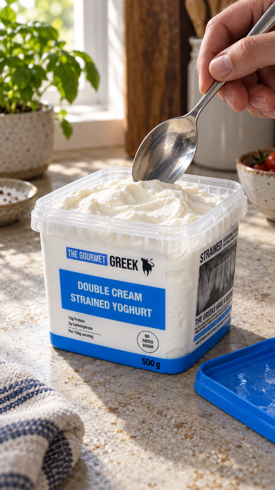
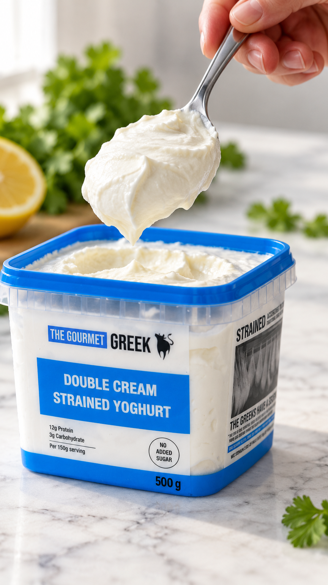
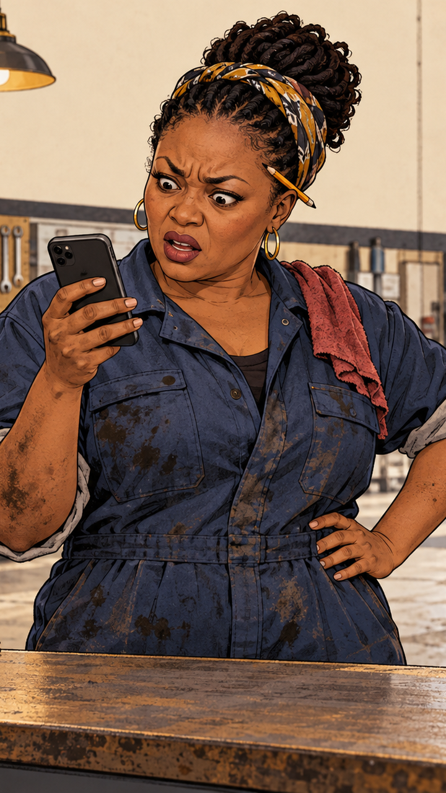

Same starting picture and the same instruction for every model, 5 seconds each. Round 2 scored out of 10 by the Creative Director; round 1 out of 18, two staff scoring blind.
Round 2: hyper-real, ChatGPT wrote the prompts
Photo prompt (ChatGPT, made with ChatGPT images from the real pack photo)
Create a photorealistic 9:16 food photograph of The Gourmet Greek 500g Double Cream Strained Yoghurt on a lightly worn kitchen counter in soft window daylight. Reproduce the attached pack photo exactly: square tub, blue lid, white label, blue panel, logo, lettering, colours and proportions; invent nothing. Show the tub open, blue lid beside it. A real adult hand holds a stainless-steel spoon just above the yoghurt, ready to dip. Natural skin pores, fine hairs, creases, believable knuckles and grip. Yoghurt has dense, softly glossy folds and tiny surface irregularities, never plastic. Gentle shadows, restrained depth of field, subtle camera grain; casual food-creator photography, no beauty retouching.
Video prompt (ChatGPT, same for every model)
Animate this still into one continuous five-second vertical 9:16 shot. First second: the hand lowers the spoon into the yoghurt. Next two seconds: it gently draws through the dense yoghurt, gathering one scoop. Final two seconds: it lifts the spoon a few centimetres and pauses. Thick strained yoghurt resists slightly, folds onto the spoon, separates with a short soft peak, and holds a rounded mound with minimal sag; no pouring, long strings, bouncing or jelly motion. Preserve hand anatomy, grip and spoon geometry. Tub, lid, counter, background and exact label remain fixed. Camera stays steady; no zoom or cuts. Maintain natural daylight, subtle skin movement and realistic contact shadows.

Starting picture
ChatGPT photo, real-looking hand
MiniMax H3: 8/10 WINNER
most real, label perfect, tiny drips under spoon
10 credits, 2K, 5 s
Kling 4.0: 6/10
label perfect, scoop huge and shiny like mousse
5 credits, 1080p, 5 s
Seedance 2.5: 6/10
best yoghurt movement, but soft and small print smudges
35 credits, 720p, 5 s
Grok Imagine 1.5 Lite: 4/10
camera creeps in, small print rewrites itself
5 credits, 720p, 5 s
Round 2 beats round 1. One fix before anything is posted: the photo misprints the side panel ("The Greeks have a secret"; the real pack says "saying").
Round 1: Product with a label
Prompt used (same for every model)
The hand slowly lowers the spoon towards the tub. The scoop of thick strained yoghurt touches the yoghurt in the tub, the hand tips the spoon, and the scoop slides off and settles into a soft mound that holds its shape. The hand lifts the empty spoon a little and stops, staying in the top right of the frame. The yoghurt is thick and does not drip, run or stretch. The tub, its label and its blue lid stay perfectly still and unchanged. The parsley and lemon behind stay still. The soft daylight stays the same. The camera is locked off and does not move. Real-time speed.

Starting picture
what every model was given
MiniMax H3: 17 WINNER
label perfect, whole action
10 credits, 2K, 5 s
Wan 3.0: 13.5
hand leaves at 4.5 s
30 credits, 1080p, 5 s
Kling 4.0: 11.5
yoghurt goes stringy at 2.5 s
5 credits, 1080p, 5 s
Gemini Omni: failed
rewrote the nutrition text
18 credits, 720p, 6 s (no 5 s option)
Round 1: Drawn character
Prompt used (same for every model)
Hand-drawn comic illustration with bold ink outlines, kept exactly as in the image for the whole clip. The woman frowns at her phone, then looks up from it straight into the camera and raises one eyebrow, and her mouth closes into a flat, unimpressed line. She holds that look. Her right hand keeps the phone; her left hand stays on her hip. The garage behind her stays exactly the same. The camera makes one slow, steady push-in for the whole clip and stops at head and shoulders, with her whole chin and the top of her headscarf in frame. Real-time speed.

Starting picture
what every model was given
Kling 4.0: 16.5 CHOSEN
does the close-up, cheapest
5 credits, 1080p, 5 s
MiniMax H3: 17
great acting, never reaches the close-up
10 credits, 2K, 5 s
Wan 3.0: 12
rebuilds the garage behind her
30 credits, 1080p, 5 s
refused twice
Gemini Omni
flagged as unsafe, credits returned
0 credits (18 refunded, twice)
163 credits used in total. Round 1: 108 (Kling 10, MiniMax 20, Gemini 18, Wan 60). Round 2: 55 (MiniMax 10, Kling 5, Seedance 35, Grok 5).